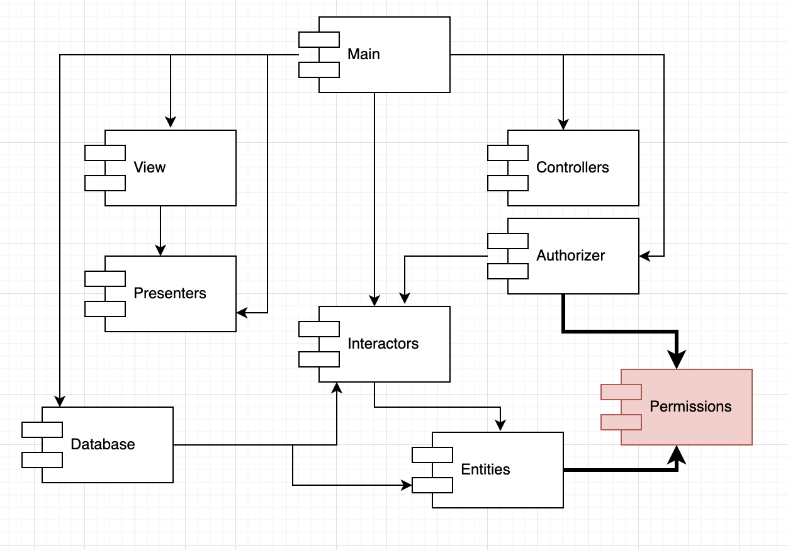

컴포넌트 결합
컴포넌트 결합은 컴포넌트 사이의 관계를 설명 한다.
ADP : 의존성 비순환 원칙
컴포넌트 의존성 그래프에 순환(cycle)이 있어서는 안된다.
숙취 증후군(the morning after syndrome)

많은 개발자가 동일한 소스파일을 수정하는 환경에서 발생한다. 소스 코드가 의존하고 있던 무엇인가가 수정되는게 주된 이유이다.
해결책
지난 수십년 동안 두가지 방법으로 해결책은 발전되어 왔다.
- 주단위 빌드(weekly build)
정해진 기간동안 개별적으로 개발한 후 변경되어진 코드를 모두 합쳐 통합하고 시스템을 빌드 하는 방법이다.
하지만 빌드에 걸리는 시간이 점점 길어지게 되면서 효율성을 유지하기 빌드일정이 늘어나게 되었다.
또한 통합과 테스트 수행이 어려워지고, 결과적으로는 개발보다 통합에 드는 시간이 더 많아졌다.
- 의존성 비순환 원칙(Acyclic Dependencies Principle, ADP)
또다른 해결책은 개발 환경을 릴리스가 가능한 컴포넌트 단위로 분리하는 것이다.
그렇게 되면서 컴포넌트가 개별 개발자 또는 단일 개발팀이 책임질 수 있는 작업단위가 되었다.
개발자 컴포넌트 개발 -> 릴리스 -> 다른 개발자가 사용
특정 컴포넌트가 변경되어도 다른 팀이 즉각 영향을 주지 않는다. 또한, 자신의 컴포넌트를 해당 컴포넌트에 맞게 수정할 시기를 스스로 결정할 수 있다.
통합은 작고 점진적으로 이루어 지며 성공적으로 보였다. 의존성 순환이 있지만 않다면!
비순환 방향 그래프
순환 방향 그래프
순환이 생기면 컴포넌트를 분리하기가 상당히 어려워진다.
단위 테스트를 하고 릴리스 하는 일도 굉장히 어려워지며, 에러도 쉽게 발생한다.
또한 컴포넌트를 어떤 순서로 빌드해야 올바를지 파악하기 조차 상당히 힘들어진다.
순환 끊기
그럼 순환을 끊어내기 위해서는 어떻게 해야할까.
- 의존성 역전 원칙 사용
- User가 필요로 하는 메서드를 제공하는 인터페이스를 생성
- Authorizer에서 인터페이스 상속
- 의존성 역전, 순환 끊기
- 흐트러짐(Jitters)

- Entities와 Authorizer가 모두 의존하는 새로운 컴포넌트 생성
- 두 컴포넌트가 모두 의존하는 클래스들을 새로운 컴포넌트로 이동
요구사항이 변경되면 컴포넌트 구조도 변경될 수 있다는 사실을 항상 명심해야 한다. 애플리케이션이 성장하면 컴포넌트 의존성 구조도 같이 성장해 나가기 떄문에 항상 의존성 구조에 순환이 발생하는지 관찰하고 또 해야 한다.
하향식 설계(top -down)
컴포넌트 구조는 하향식으로 설계될수 없다.
시스템에서 가장 먼저 설계할 수 있는 대상이 아니며, 오히려 시스템이 성장하고 변경될 때마다 함께 진화해야 한다.
컴포넌트 의존성 다이어그램은 애플리케이션의 빌드 가능성과 유지보수성을 보여주는 지도와 같다. 그래서 프로젝트 초기에 설계될수 없다.
우리는 애플리케이션이 성장함에 따라 재사용 가능한 요소를 만드는 일에 관심을 기울이기 시작한다. 컴포넌트를 조합하는 과정에 공통 재사용 원칙(CRP)가 영향을 미치기 시작한다. 순환이 발생하면 ADP가 적용되고, 컴포넌트 의존성 그래프는 흐트러지면서 성장한다.
컴포넌트 의존성 구조는 시스템의 논리적 설계에 발맞춰 성장하며 또 진화해야 한다.
SDP : 안정된 의존성 원칙
안정성의 방향으로 (더 안정된 쪽에) 의존하라.
변경이 쉽지 않은 컴포넌트가 변동이 예상되는컴포넌트에 의존하게 만들어서는 절대 안된다.
SDP를 준수하면 변경하기 어려운 모듈이 변경하기 쉽게 만들어진 모듈에 의존하지 않도록 만들 수 있다.
안정성
“쉽게 움직이지 않는” - Webster 사전 중..
소프트웨어 컴포넌트를 변경하기 어렵게 만드는 확실한 방법 하나는 수많은 다른 컴포넌트가 해당 컴포넌트에 의존하게 만드는 것이다.
컴포넌트 안쪽으로 들어오는 의존성이 많아지면 상당히 안정적이라 할 수 있다. 사소한 변경에도 의존하는 모든 컴포넌트를 만족시키면서 변경하려면 상당한 노력이 들기 때문이다.
x는 안정된 컴포넌트이다. x에 세 컴포넌트가 의존, x컴포넌트를 변경하지말아야 할 이유가세기자나 되기 때문이다.
x는 세 컴포넌트를 책임진다. 즉 x 는 어디에도 의존하지 않으므로 x는 독립적이다.

y는 불안정한 컴포넌트이다. y에 의존하는 컴포넌트가 없어 책임성이 없다.
세개의 컴포넌트에 y가 의존하므로 변경이 발생할수 있는 외부 요인이 세 가지나 된다. 즉, y는 의존적이라 할 수 있다.
안정성 지표
컴포넌트로 들어오고 나가는 의존성의 개수를 세어보는 방법
이 숫자를 통해 컴포넌트가 위치상 어느정도 안정성을가지는지 계산할 수 있다.
- Fan-in : 안으로 들어오는 의존성. 컴포넌트 내부의 클래스에 의존하는 컴포넌트 외부의 클래스 개수
- Fan-out : 바깥으로 나가는 의존성. 컴포넌트 외부의 클래스에 의존하는 컴포넌트 내부의 클래스 개수
- I(불안정성) : I = Fan-out / (Fan-in + Fan-out).
I는 [0, 1] 의 범위를 가지며,
I = 0 최고로 안정된 컴포넌트,
I = 1 최고로 불안정한 컴포넌트 이다.
“즉 밖으로 나가는, 의존하는 컴포넌트가 많을 수록 I는 커진다.”
I 값이 1이면 어떤 컴포넌트도 해당 컴포넌트에 의존하지 않지만 (Fan-in = 0) 해당 컴포넌트는 다른 컴포넌트에 의존한다.(Fan-out > 0)
이러한 상태는 컴포넌트가 가질 수 있는 최고로 불안정한 상태다.
이 컴포넌트는 책임성이 없으며, 의존적이다.
자신에게 의존하는 컴포넌트가 없어 컴포넌트를 변경하지 말아야할 이유가 없다.
다른 컴포넌트에 의존하고 있어 언젠가는 해당 컴포넌트를 변경해야 할 이유가 있다.
I 값이 0 이면 해당 컴포넌트에 의존하는 다른 컴포넌트가 있지만(Fan-in >0) 해당 컴포넌트 자체는 다른 컴포넌트에 의존하지 않는다.(Fan-out = 0)
이런 컴포넌트는 다른 컴포넌트를 책임지며, 독립적이고, 변경하기 어렵지만 해당컴포넌트를 변경하도록 강제하는 의존성을 갖지 않는다.
SDP에서 컴포넌트의 I 지표는 그 컴포넌트가 의존하는 다른 컴포넌트들의 I보다 커야 한다고 말한다.
의존성 방향으로 갈수록 I 지표 값이 감소해야 한다. 즉 의존성 방향으로 갈수록 자신이 의존하는 컴포넌트보다 자신을 의존하는 컴포넌트가 많아야 한다.
모든 컴포넌트가 안정적이어야 하는 것은 아니다.
모든 컴포넌트가 최고로 안정적인 시스템이라면 변경이 불가능하다.
절대 바람직한 상황이 아니다.
위 다이어그램은 세 컴포넌트로 구성된 시스템이 가질 수 있는 이상적인 구조다.
위 다이어그램에서 SDP가 어떻게 위배될 수 있는지를 보여주는데 Stable의 I지표는 Flexible의 I지표보다 작기 때문이다. 결국 Flexible은 변경하기 어렵게 되었다.
해결책
결국은 DIP이다.
Stable 내부의 U가 Flexible 내부 클래스 C를 사용한다고 가정하자.
- US 인터페이스 생성
- UServer 컴포넌트에 삽입
- US가 U가 사용하는 모든 메서드 선언
- C가 해당 인터페이스 구현
추상 컴포넌트
: 오로지 인터페이스만을 포함하는 컴포넌트 (ex: UServer)
추상 컴포넌트는 상당히 안정적이며, 의존할 수 있는 의존적인 대상이다.
SAP : 안정된 추상화 원칙
컴포넌트는 안정된 정도만큼만 추상화되어야 한다.
고수준 정책을 어디에 위치시켜야 하는가?
컴포넌트가 최고로 안정된 상태이면서도 (I=0) 동시에 변경에 충분히 대응할 수 있을 정도로 유연하게 만들 수 있을까?
SAP는 안정성과 추상화 정도 사이의 관계를 정의한다.
안정적인 컴포넌트라면 반드시 인터페이스와 추상 클래스로 구성되어 쉽게 확장될 수 있어야 한다.
또한 불안정한 컴포넌트는 반드시 구체 컴포넌트로써 내부의 코드를 쉽게 변경할 수 있어야 한다.
추상화 정도 측정하기
Nc: 컴포넌트의 클래스 개수
Na : 컴포넌트의 추상 클래스와 인터페이스 개수
A : 추상화 정도. A = Na / Nc
A 지표는 0과 1사이의 값을 가지며 A = 0 이면 컴포넌트에는 추상클래스가 하나도 없다는 뜻이고, A가 1 이면 컴포넌트는 오로지 추상 클래스만 포함한다는 뜻이다.
“결국 컴포넌트가 가지고 있는 클래스 중에 추상클래스와 인터페이스가 얼마나 있는가?”
A/I 그래프에서 컴포넌트가 절대로 위치해서는 안되는 영역, 배제할 구역을 찾는 방식으로 컴포넌트를 어디에 위치시켜야 하는지 찾을 수 있다.
- 고통의 구역
(0, 0) 주변 구역에 위치한 컴포넌트는 매우 안정적이며 구체적이다. 뻣뻣한 상태로 추상적이지 않아 확장 할 수 없고, 안정적이므로 변경하기 어렵다.
따라서 (0,0) 주변 구역을 고통의 구역이라 부른다. 해당 구역에서 문제가 되는 컴포넌트는 변동성이 있는 경우에 한한다.
변동성이 크면 클수록 고통은 비례한다.
ex ) 데이터베이스 스키마, 구체적인 유틸리티 라이브러리(String 컴포넌트)
- 쓸모없는 구역
(1,1) 주변의 구역에 위치한 컴포넌트는 최고로 추상적이지만 누구도 그 컴포넌트에 의존하지 않는다.
이러한 컴포넌트는 쓸모가 없다.
- 주계열
두 배제 구역으로 부터 가능한 멀리 떨어진 점들의 궤적이다.
즉,
“(1,0)과 (0,1)을 이은 선분 = 주계열”
너무 추상적이지도, 너무 불안정하지도 않다.
컴포넌트는 주계열에 가깝게 위치할 때가 가장 이상적이다.
주계열과의 거리
주계열과의 거리를 측정하여 이상적인 상태로부터 컴포넌트가 얼마나 떨어져 있는지 측정하는 지표 만들기
D : D = | A + I - 1 | (유효범위 0 ~ 1)
D 가 0 이면 컴포넌트가 주계열 바로 위에 위치
D 가 1이면 주계열로부터 가장 멀리 위치
결론
의존성 관리 지표는 설계의 의존성과 추상화 정도가 내가 훌륭한 패턴이라고 생각하는 수준에 얼마나 잘 부합하는지 측정한다.
하지만 측정값에 지나지 않으므로 적절히 참고해 유용하게 사용해야 한다.
출처
https://adriancitu.com/tag/the-common-closure-principle/
https://slideplayer.com/slide/5231111/